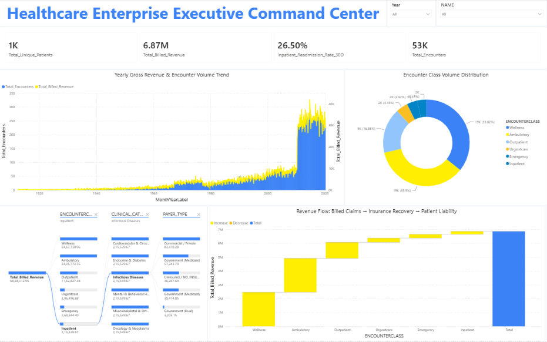
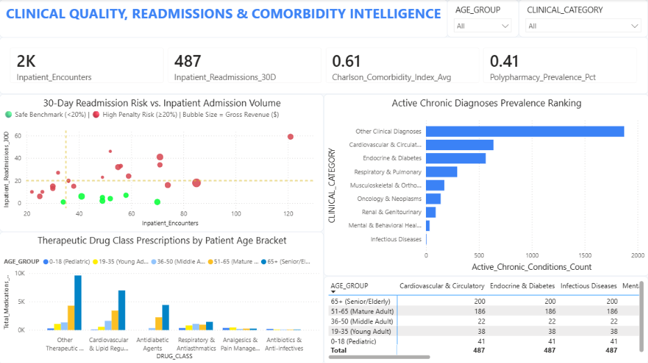
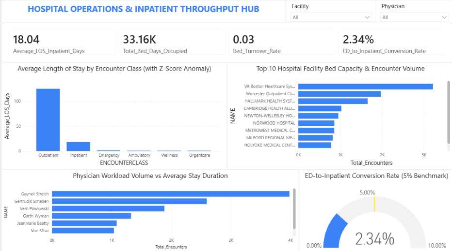
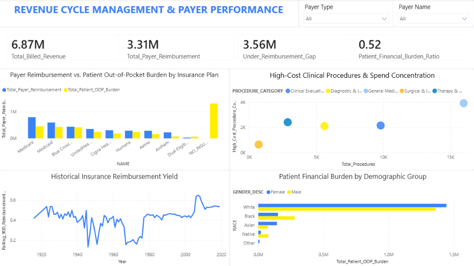
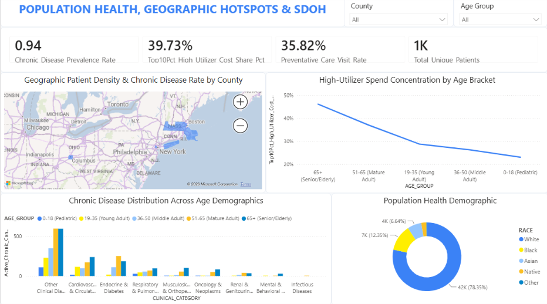

Enterprise Healthcare EHR Analytics Platform
Optimizing Clinical Outcomes, Acute Hospital Flow, and Payer Economics
An interactive multi-stakeholder Power BI analytics platform architected to overcome fragmented hospital transactional databases and deliver role-specific business intelligence for executive decision-makers.
Longitudinal Multi-Table Healthcare Repository
The Healthcare "Triple Aim" Dilemma & Institutional Challenges
• Regulatory Threat: Under CMS Hospital Readmissions Reduction Program (HRRP), 30-day preventable readmissions exceeding 20% trigger severe penalties up to 3% of total hospital Medicare reimbursements.
• Chronic Disease Drivers: Heart failure, diabetes, and COPD in elderly cohorts (age 65+) account for over 65% of preventable readmissions.
• Polypharmacy Risk: 41.0% of chronic patients take ≥5 concurrent medications, escalating adverse drug interaction risks.
• Capacity Saturation: Extended Average Length of Stay (ALOS) restricts acute bed turnover, resulting in emergency department boarding and delayed surgical admissions.
• Outlier Variance: Statistical anomalies (Z > 2.0) in complex chronic cases drive unpredictable bed hold times without clinical pathway standardization.
• ED Triage Efficiency: Emergency conversion to inpatient is controlled at 2.34%, proving admissions originate from acute clinical necessity.
• Payer Recovery Gap: Insurers reimburse only 48.16% ($3.31M) of $6.87M gross billed claims, leaving a $3.56M shortfall.
• Uninsured Vulnerability: Uninsured patients face >$1.3M in direct liabilities, representing the single largest driver of uncompensated hospital bad debt.
• Managed Care Disparities: Significant variance between commercial yields (45%–65%) and government payment formulas.
Production Star Schema Architecture & Master DAX Calculation Engine
Normalized Relational Data Architecture
Key Mathematical & Clinical Formulations
Chronologically sequenced encounters to evaluate consecutive Inpatient admissions with Δt = (Admit Date − Prior Discharge) ≤ 30 days.
Dynamic weighted clinical risk algorithm assigning validated weights (1 to 6) across cardiovascular, diabetic, renal, and oncological conditions.
Formulated Z = (LOS − μ) / σ to flag statistical stay anomalies (Z > 2.0) directly inside interactive visual tooltips.
Iterates virtual patient tables using TOPN and SUMX to evaluate healthcare wealth and cost concentration curves.
Dashboard 1: Healthcare Enterprise Executive Command Center

• Macro Governance: Gives executive leadership immediate visibility into gross revenue trajectory, patient volume growth, and clinical readmission risk.
• Revenue Waterfall Dynamics: Traces claim flow from gross billed ($6.87M) through payer reimbursement ($3.31M) to patient out-of-pocket exposure ($3.56M).
• Decomposition Tree Root-Cause: Enables drill-down of billed revenue across Encounter Classes (Wellness vs Inpatient), Clinical Categories, and Payer Types.
Dashboard 2: Clinical Quality, Readmissions & Comorbidity Intelligence

• Readmission 4-Quadrant Matrix: Pinpoints clinical specialties in the high-volume, high-penalty quadrant exceeding the 20% CMS penalty threshold.
• Chronic Clustering: Cardiovascular & Circulatory and Endocrine & Diabetes represent over 65% of all active chronic disease diagnoses.
• Senior Polypharmacy Risk: Patients aged 65+ account for 200 out of 487 readmissions, strongly correlated with high medication burden.
Dashboard 3: Hospital Operations & Inpatient Throughput Hub

• Stay Duration Optimization: Average stay of 18.04 days represents an acute operational opportunity to eliminate discharge bottlenecks.
• Emergency Triage Velocity: A 2.34% ED conversion rate confirms excellent triage, resolving non-emergent visits without clogging inpatient beds.
• Physician & Facility Throughput: Tracks patient volume vs stay duration across 1,120 facilities (VA Boston, Worcester) and attending physicians.
Dashboard 4: Revenue Cycle Management & Payer Performance

• Payer Contract Variances: Reveals significant variance in reimbursement ratios between commercial payers (45%–65%) and government plans.
• Uninsured Bad-Debt Driver: Patients without insurance coverage account for over $1.3M in direct liabilities, driving hospital uncompensated care.
• High-Cost Procedural Margins: Surgical and specialized diagnostic imaging procedures account for the highest unit costs (> $5,000).
Dashboard 5: Population Health, Geographic Hotspots & SDoH

• Geographic Hotspots: Middlesex and Worcester counties represent over 34% of the aggregate chronic disease burden across Massachusetts.
• Age Demographics & Chronic Burden: High-utilizer spend concentration accelerates above age 51, while pediatric cohorts present predominantly with asthma.
• SDoH Health Equity Donut: Quantifies patient demographic equity across racial and ethnic groups to identify vulnerable populations.
Strategic Clinical Protocols & Quantified Financial ROI ($430,000+ Net Annual Savings)
• Action Protocol: Introduce mandatory 48-hour post-discharge nurse follow-up calls and 7-day primary clinic visits for high-risk patients (Charlson Comorbidity Index ≥ 3).
• Target Outcome: A 20% reduction in preventable 30-day readmissions avoids ~$280,000 in CMS penalty deductions and uncompensated care expenses.
• Action Protocol: Institute standardized multidisciplinary daily discharge planning rounds across surgical and acute inpatient wards.
• Target Outcome: Decreasing average stay from 18.04 to 15.5 days frees 4,500 acute bed-days, increasing high-margin surgical intake capacity without expanding physical hospital beds.
• Action Protocol: Establish an upfront patient financial advocacy desk to enroll uninsured and under-insured patients into Medicaid/sliding-scale coverage prior to discharge.
• Target Outcome: Accelerates cash collection by 14 days and lowers uncompensated bad-debt write-offs by $150,000 annually.
Data Governance, HIPAA Security & Viva Defense Talking Points
Data Model Integrity
Evaluator Question: Why normalize into a Star Schema instead of importing a single flat table?
Defense Answer: A flat table merging 53k encounters with multiple diagnoses and medications creates severe Cartesian product duplication, multiplying claim sums by 3x–5x. The Star Schema ensures 100% normalization, optimal VertiPaq columnar compression, and sub-second DAX execution.
Longitudinal Window Calculation
Evaluator Question: How did you compute 30-day readmissions without an explicit flag in the raw data?
Defense Answer: Engineered a longitudinal window algorithm in Python/DAX: sequenced encounters chronologically by patient key, filtered for consecutive Inpatient encounter classes, and calculated whether elapsed time between prior discharge and next admission was Δt ≤ 30 days.
Statistical & Clinical Depth
Evaluator Question: What distinguishes this from basic BI dashboards?
Defense Answer: Rather than descriptive aggregations, this platform incorporates clinical risk models (Charlson Comorbidity Index), statistical stay anomaly detection (Z-scores), Pareto spend concentration, national ED benchmarks (5.0%), and role-tailored governance for 5 hospital executives.